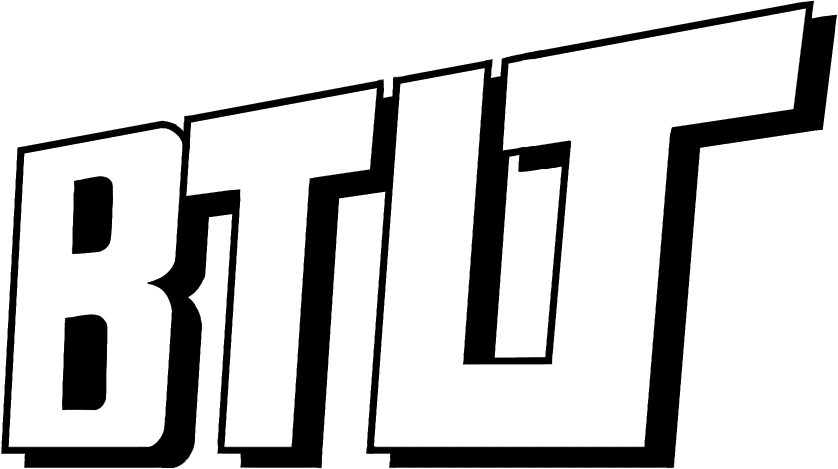

Vidéaste
films de marque & captation
Une caméra, un pied, et du temps sur place. Je filme ce qui arrive plutôt que ce qui était prévu au découpage — et je monte moi-même, parce que la moitié du film se décide là.

Une caméra, un pied, et du temps sur place. Je filme ce qui arrive plutôt que ce qui était prévu au découpage — et je monte moi-même, parce que la moitié du film se décide là.
À propos
Je filme depuis dix ans, dont sept à temps plein. J'ai commencé en salle de montage, sur les rushes des autres — c'est là qu'on apprend ce qu'on regrette de ne pas avoir tourné.
Je travaille seul, ou à deux quand le direct l'exige. Deux boîtiers, trois focales fixes, un enregistreur son et de la lumière qu'on ne remarque pas. Pas de drone systématique, pas de slider sur chaque plan : un mouvement doit avoir une raison.
Je me déplace partout en France, et en Europe quand le projet le justifie. Je ne prends pas plus de vingt projets par an, pour garder le temps de monter correctement et de livrer en trois semaines.
Prestations
Une journée de tournage chez vous, avec vos équipes, sans acteurs et sans texte récité. Le film qui en sort dure trois à cinq minutes et ressemble à ce que vous faites.
à partir de 2 200 €
Concert, conférence, inauguration : deux caméras, un son pris à la source, et un aftermovie livré avant que tout le monde ait oublié la soirée.
à partir de 1 400 €
Une journée, plusieurs vidéos verticales. Pensées pour être vues sans le son, coupées court, et suffisamment différentes les unes des autres.
à partir de 890 €
Chaque devis est établi après un échange — la durée, le lieu et le nombre de livrables changent le prix. Les montants ci-dessus incluent le déplacement dans un rayon de 80 km et une série de retouches après la première version.
Ils en parlent
« On l'a laissé tourner deux jours dans l'atelier. Les gens ont fini par oublier la caméra, et c'est exactement ce qu'on voulait montrer. »
Hélène R. — Ferme Saint-Yon, film de marque
« Aftermovie reçu le mercredi pour un concert du samedi. Le son direct change tout : on entend la salle, pas une musique posée par-dessus. »
Yanis B. — Festival des Docks
« Il nous a dit non deux fois sur des idées qu'on trouvait bonnes. Il avait raison les deux fois. C'est pour ça qu'on le rappelle. »
Sophie M. — direction de la communication
M'écrire
Une date, un lieu, une intention. Je réponds en deux jours ouvrés, moi-même, et jamais avec un modèle de mail.